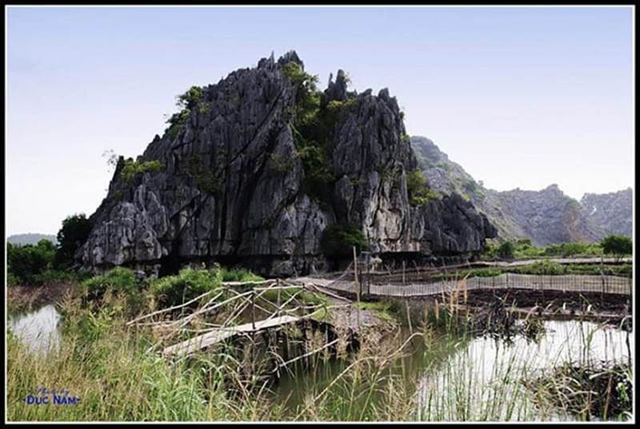
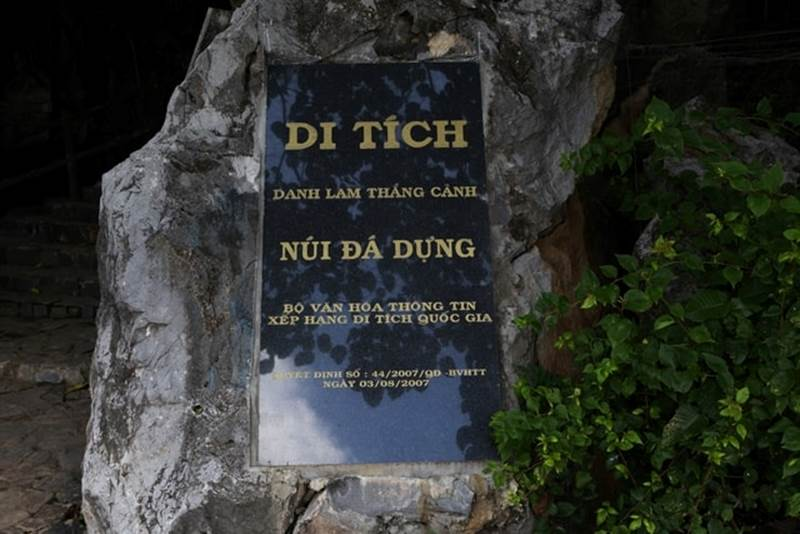
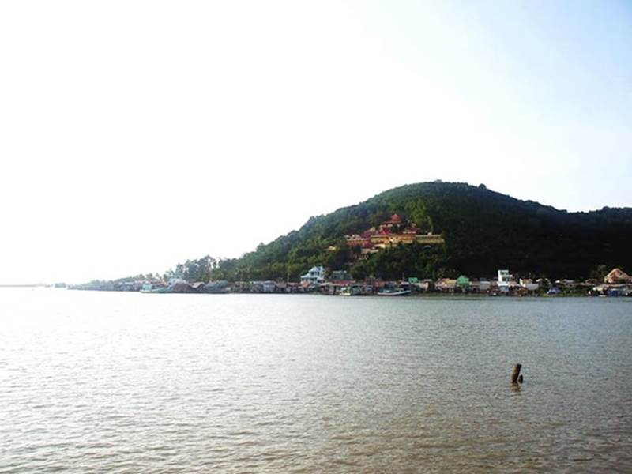
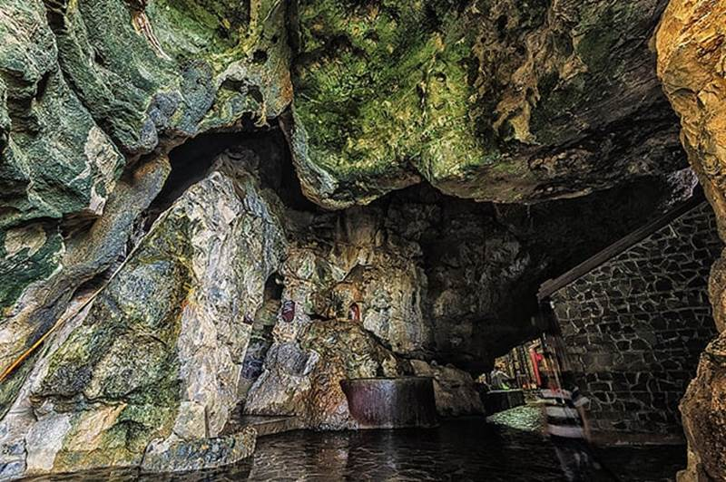
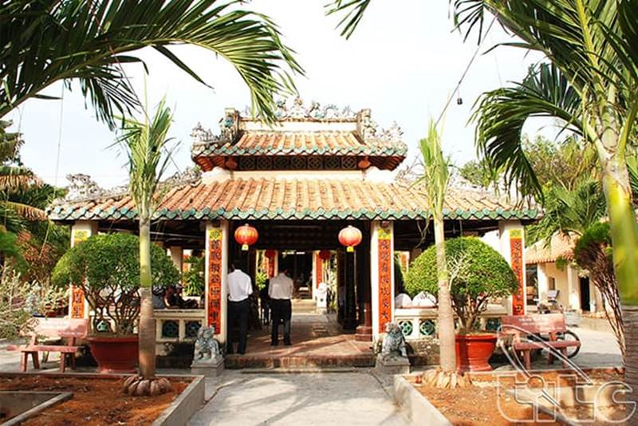
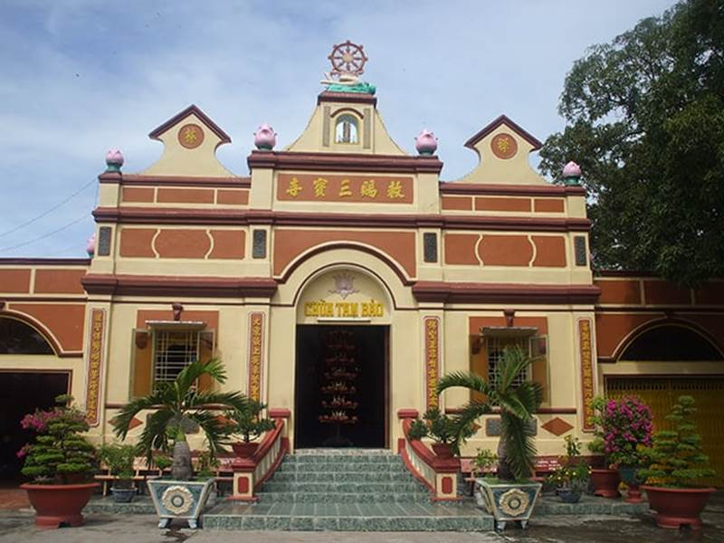
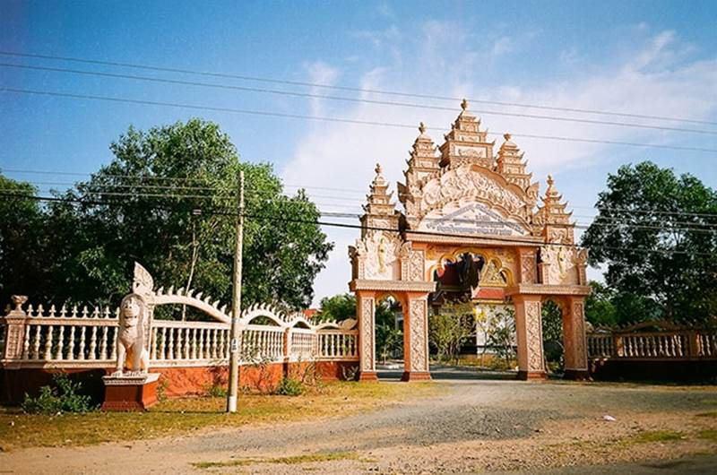
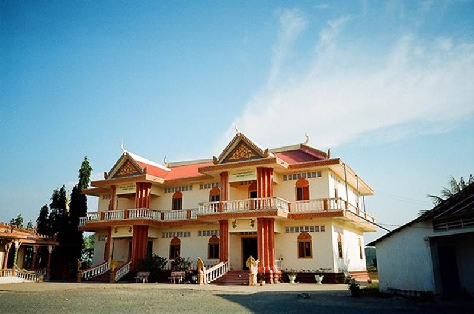
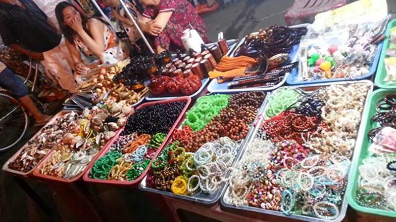

Được
mệnh danh là “thập vịnh cảnh” từng đi vào
nhiều áng văn thơ nổi tiếng của những
bậc thi nhân đại tài, Hà Tiên với những cảnh
đẹp thiên nhiên đầy chất thơ, những di
tích lịch sử, đền chùa miếu mạo cổ
kính, linh thiêng đã trở thành một điểm
đến yêu thích của nhiều người. Với
cuốn cẩm nang du lịch Hà Tiên ngay sau đây, VNTRIP.VN hy
vọng bạn sẽ có một chuyến du lịch Hà Tiên
đầy trải nghiệm và vô cùng đáng nhớ!
Hà Tiên với cảnh sắc xanh
tươi đã chinh phục được nhiều khách
du lịch (Ảnh: Sưu tầm)
Hà Tiên là thị
xã nằm ở phía Tây Bắc của tỉnh Kiên Giang, phía
Bắc giáp với Campuchia cùng đường bờ
biển chạy dài 13,7km; phía Đông và Nam giáp với
huyện Kiên Lương; phía Nam giáp với vịnh Thái Lan
cùng đường bờ biển dài 22 km. Với
địa thế tuyệt vời như vậy, Hà Tiên
sở hữu những địa điểm du lịch vô
cùng hấp dẫn mà bạn không thể chối từ.
Thời điểm lí tưởng
để du lịch Hà Tiên
Một điểm tuyệt vời của
mảnh đất Hà Tiên đó chính là bạn có thể
đi du lịch tới đây vào bất kì thời
điểm nào trong năm. Với hai mùa mưa và nắng rõ
rệt, hơn thế ít khi bị ảnh hưởng
bởi mưa bão nên Hà Tiên có thể sẵn sàng đón
tiếp bạn một cách chu toàn nhất vào bất kì
thời điểm nào bạn muốn trải nghiệm
tại nơi đây. Mùa khô bắt đầu từ tháng 12
tới tháng 4 với nhiệt độ cao nhất chỉ
rơi vào khoảng 31 độ C, không hề gây cản
trở hay mệt mỏi suốt chặng đường
của bạn. Mùa mưa kéo dài từ tháng 5 đến tháng
11, nếu ai không thích thời tiết mưa mát mẻ thì có
thể tránh đi vào khoảng thời gian này.
Hà Tiên vô cùng ưu ái khách du lịch
khi có thể đón tiếp họ vào mọi thời
điểm trong năm (Ảnh: Sưu tầm)
Những
ai từng tìm hiểu, từng đọc về Hà Tiên
chắc chắn đã từng nghe qua về Núi đá
dựng, một biểu tượng đẹp đẽ,
hùng vĩ và tráng lệ của Hà Tiên. Núi đá dựng
nằm gần biên giới Việt Nam – Campuchia, còn
được biết đến với tên gọi núi Châu
Nham. Núi đá dựng cao khoảng 100m, có hình dáng một hình
thang cân. Nhìn từ xa, núi Đá Dựng có hình thù vuông vức
như được một bàn tay khéo léo gọt
đẽo, phủ kín bởi rừng cây xanh lá bạt ngàn
tạo nên một thảm thực vật khổng lồ và
đẹp mắt.

Núi
đá dựng (Ảnh: Sưu tầm)
Để
di chuyển tới Hà Tiên, khách du lịch xuất phát từ
thị xã Hà Tiên, đi theo tuyến quốc lộ 80
khoảng 6 km về hướng cửa khẩu Xà Xía.
Đến Thạch Đông thì có một con đường
rẽ phải, đi chừng 1 km là tới Núi đá
dựng. Núi này còn có tên là Núi ngọc bởi từ xa
xưa, đây là nơi cư ngụ của cư dân Phù Nam
cổ. Thời đó quân Xiêm và Chân Lạp sang đây
cướp bóc của cải nên người dân phải
giấu ngọc ngà châu báu vào trong hang. Vào cuối thế
kỉ 17, một vài người đến đây nhặt
được ngọc quý nên đặt tên ngọn núi là
núi ngọc.

Du
lịch núi đá dựng (Ảnh: Sưu tầm)
Đến
với núi đá dựng là đến với sự kì
vĩ, thần bí của những hang động, những
nhũ đá thiên nhiên. Du khách có thể bắt đầu
cuộc hành trình khám phá Núi đá dựng với một cây
đèn pin nho nhỏ. Núi đá dựng bao gồm nhiều
hang động khác nhau, mỗi hang động đều
mang trong mình một vẻ đẹp riêng biệt: Hang
Dơi có thạch nhũ hình bầu hồ lô; hang Thần
Kim Quy có khối đá xanh, dẹt dẹt như hình con rùa
thần; động Bồng Lai chinh phục bởi không khí
trong lành như chốn tiên; động Khổ Qua thì nuôi
dưỡng những nhũ đá kì thú mang hình trái khổ
qua khổng lồ,…
Núi
đá dựng với những nhũ đá đẹp
mắt (Ảnh: Sưu tầm)
Núi
đá dựng với rất nhiều hang động kì bí
từng đi vào những câu chuyện cổ tích về
Thạch Sanh và Lí Thông. Đây chính là nơi Thạch Sanh
ở, và cửa hang chính là nơi chàng trai này đã
giương cung tên bắn đại bàng để cứu
công chúa.
Núi Tô
Châu là một tuyệt tác thiên nhiên đẹp mắt ở
Hà Tiên, là điểm đặt chân thu hút được
rất nhiều khách du lịch. Tô Châu duyên dáng tỏa sáng
giữa một vùng biển trời non nước mênh mông.
Đứng ở núi Tô Châu có thể phóng tầm mắt nhìn
bao quát cả một vùng Hà Tiên đẹp đẽ.
Tham
quan Núi Tô Châu hiện lên đầy màu sắc (Ảnh:
Sưu tầm)
Núi Tô
Châu gồm hai ngọn núi là Đại Tô Châu và Tiểu Tô
Châu. Đại Tô Châu có vẻ cao lớn hơn nhưng
lại nhún nhường hơn Tiểu Tô Châu bé nhỏ luôn
luôn soi bóng suốt mặt vũng Đông Hồ xinh
đẹp. Từ Tô Châu nhìn xuống, cả một vùng
Đông Hồ đẹp đẽ, trong trẻo, xanh mượt
hiện ra trước mắt. Xa xa hơn một chút Hà Tiên
hiện lên với nét đẹp hài hòa giữa thiên nhiên và
cuộc sống con đường với hình ảnh làng mạc,
đồng ruộng mộc mạc chấm phá trong tấm
tranh nền thiên nhiên tràn đầy sức sống. Tất
cả hòa hợp với nhau tạo nên một bức tranh Hà Tiên thật đi
vào lòng người.

Hình
ảnh núi Tô Châu xinh đẹp bên vũng Đông Hồ
(Ảnh: Sưu tầm)
Đến
với Hà Tiên chúng ta không thể bỏ qua Thạch
Động, một thắng cảnh nổi tiếng
của đất Hà Tiên xưa. Đường di
chuyển tới Thạch Động khá đơn
giản, từ trung tâm thị xã Hà Tiên đi theo con
đường nhựa về hướng biên giới Tây
Nam khoảng 3 km là có thể bắt gặp hình ảnh
của núi Thạch Động sừng sững, uy nghiêm
giữa một vùng cỏ cây đẹp đẽ.
Thạch
Động được mở cửa từ 7h sáng
tới 5h chiều với giá vé dao động khoảng
50.000 đồng đổ xuống.
Thạch
Động (Ảnh: Sưu tầm)
Từ
dưới chân núi bạn phải vượt qua một
đoạn đường dốc dài khoảng 50m
để lên tới cửa động. Thạch
Động có hai cửa hang chính, một cửa hang
hướng về thị xã Hà Tiên, cửa còn lại
hướng về phía cánh đồng Mỹ Đức.
Một công trình cổ kính nằm phía bên trong Thạch
Động đó chính là ngôi chùa cổ bằng gỗ
được xây dựng từ năm 1790. Hiện nay ngôi
chùa được tu sửa lại và lát gạch đá hoa
cương vừa trang trọng, vừa đẹp mắt.

Du lịch Thạch
Động được lát đá hoa cương lung linh,
đẹp đẽ (Ảnh: Sưu tầm)
Trong
hang còn có các ngách nhỏ thông lên giếng trời, nơi mà
du khách có thể đứng trong hang động mát lạnh
nhìn lên bầu trời trong xanh, rộng lớn bên ngoài,
đón những tia nắng rực rỡ, tươi
tắn chiếu vào trong hang, làm các nhũ đá ánh lên
đầy màu sắc. Còn có một ngách nữa thông
xuống biển Mũi Nai. Người ta gọi hai con
đường này là đường thông lên trời và
đường thông xuống âm phủ. Vì lí do an toàn nên
đường thông xuống biển đã được
lấp kín, chỉ còn đường đi lên giếng
trời chan hòa ánh nắng.
Giếng
trời với ánh sáng lấp lánh từ thiên
đường (Ảnh: Sưu tầm)
Thạch
Động đẹp nổi bật bởi những
nhũ đá vô cùng đẹp mắt. Dưới ánh đèn
pin le lói của khách du lịch và những ánh nắng
nhẹ nhàng nơi giếng trời khiến những
nhũ đá càng thêm lung linh, đẹp đẽ.
Thạch
Động với nhũ đá kì bí, độc đáo
(Ảnh: Sưu tầm)
Với
những ai yêu thích lịch sử mà muốn tham quan
những di tích lịch sử nổi bật ở đây
thì Lăng Mạc Cửu là một điểm đến
rất đáng thử. Nằm lưng chừng núi Bình San,
Lăng Mạc Cửu là một công trình khá đồ
sộ, một quần thể kiến trúc với lăng
mộ của các đời nhà họ Mạc, dòng họ có
nhiều tiếng vang trong lịch sử.
Lăng
Mạc Cửu bao phủ bởi màu sắc cổ kính
(Ảnh: Sưu tầm)
Mặt
tiền của Lăng Mạc Cửu hướng về
phía Đông, nơi có núi Tô Châu đẹp dịu dàng bên dòng
Đông Hồ lững lờ trôi chảy. Cổng
đền thờ có hai câu đối “Nhất môn trung
nghĩa gia thinh trọng, Thất diệp phiên hàn quốc
lũng vinh” (Một nhà trung nghĩa danh thơm cả
họ, Bảy lá giậu che, cả nước mến yêu.)
được nhà Nguyễn ban tặng.

Du
lịch Lăng Mạc Cửu Hà Tiên(Ảnh: Sưu tầm)
Phía
trước lăng là một ao sen, theo tương
truyền là do Mạc Cửu sai đào để lấy
nước cho người dân Hà Tiên sử dụng. Ngôi
đền thờ nhà Mạc mang một vẻ đẹp
cổ kính, linh thiêng nhưng không kém phần tinh xảo
bởi những nét chạm khắc cầu kì, uyển
chuyển, đẹp đẽ. Vào đây tham quan, thắp
một nén hương bày tỏ lòng thành kính, cảm
nhận mùi khói hương lan tỏa trong gió mới
thấy lòng bình an và thêm yêu lịch sử của
đất nước.
Ao sen
thơ mộng bên Lăng Mạc Cửu (Ảnh: Sưu
tầm)
Lăng
Mạc Cửu (Ảnh: Sưu tầm)
Một
ngôi chùa cũng xếp vào hàng những ngôi chùa đẹp
ở Hà Tiên đó chính là Chùa Tam Bảo. Tọa lạc trên
con đường số 75 Phương Thanh, phường
Bình San, thị xã Hà Tiên. Ngôi chùa có khuôn viên rộng lớn và
thoáng mát. Trước đây ngôi chùa đã bị hỏng
nhưng sau trùng tu chùa vẫn còn lưu lại một
số công trình kiến trúc nổi bật: An vị
tượng Bồ tát Quan âm lộ thiên, chánh điện và
nhà Tổ, an vị tượng Thiên thủ Thiên Nhãn,…

Tham
quan chùa Tam Bảo (Ảnh: Sưu tầm)
Đi
chùa Tam Bảo (Ảnh: Sưu tầm)
Chùa
Tam Bảo với công trình kiến trúc được trùng
tu lại đẹp đẽ (Ảnh: Sưu tầm)
Không
chỉ hấp dẫn bởi những di tích lịch sử
mang nhiều dấu ấn dân tộc mà Hà Tiên còn chinh
phục khách du lịch bởi cảnh đẹp thiên nhiên
phong phú và đặc sắc. Một trong những danh lam
thắng cảnh nổi bật ở nơi đây đó
chính là bãi biển Mũi Nai, một trong 10 cảnh
đẹp được Mạc Thiên Tứ ca ngợi qua
thi phẩm “Lộc Trĩ thôn cư”. Vẻ đẹp
mộng mơ, trong trẻo, rộng lớn của Mũi
Nai cũng là một trong số những “Hà Tiên thập
cảnh” còn tồn tại cho tới tận bây giờ.
Đi
Hà Tiên thăm biển Mũi Nai xinh đẹp (Ảnh:
Sưu tầm)
Tên
gọi Mũi Nai bắt nguồn từ một truyền
thuyết từ xa xưa khi có một chú nai con thuộc
giống nai thần hay ra đây uống nước.
Một ngày đang mải ngắm nhìn cảnh vật
đẹp đẽ ở nơi vùng biển xanh trời
này, nai con không kịp giờ về trời. Biển
nổi sóng, biến chú nai nhỏ thành một tảng đá
dạt về phía ven bờ biển. Bởi vậy bây
giờ khách du lịch khi ghé thăm nơi đây sẽ
thấy một tảng đá hình chú nai xinh đẹp
nằm tựa sát bên mặt biển xanh đẹp
đẽ.
Bãi
biển Mũi Nai đông đúc người tới du
lịch nghỉ dưỡng (Ảnh: Sưu tầm)
Không
sở hữu bãi cát trắng tinh như nhiều bãi biển
khác, cát Mũi Nai có màu nâu sậm, đối nghịch
với màu biển xanh trong. Có hai bãi cát trong vùng biển
Mũi Nai là bãi Nô và bãi Bằng: bãi Nô nằm bên xóm chài, mang
vẻ đẹp của cuộc sống người dân
ven biển với những căn nhà nhỏ, nô nức
tiếng nói cười, tiếng người dân chài hò nhau
ra khơi đánh cá. Trái ngược với bãi Nô là bãi
Bằng với bãi cát phẳng, thưa thớt
người, phù hợp với việc vui chơi, tắm
biển của khách du lịch. Mỗi khi sóng đánh vào
bờ biển, cát cuộn lên thành một dải màu đen
lạ lùng. Những người dân nói rằng màu đen
đó là do trong cát có bùn nên rất tốt cho da của
bạn khi tắm ở đây.
Du
lịch biển Mũi Nai với những con sóng xô bờ
cát (Ảnh: Sưu tầm)
Ra
biển là không thể bỏ lỡ cảnh chiều tà trên
biển, khi mặt trời treo lơ lửng ở nơi
lưng chừng mặt nước, đỏ hồng
cả một góc trời, soi bóng những chiếc
thuyền cá xa xa. Mũi Nai là điểm du lịch nổi
bật ở Hà Tiên nên nó có đầy đủ những
dịch vụ nghỉ ngơi cũng như phục vụ
cho nhu cầu ăn uống, thưởng thức các
loại đặc sản, trái cây rừng thơm ngon,
đảm bảo một khi đã thử là không bao giờ
quên được.
Biển
Mũi Nai với những trò chơi trên biển thú vị
(Ảnh: Sưu tầm)
Đầm
Đông Hồ nằm ở chân núi Tô Châu, với diện
tích rộng lớn lên tới 1.300 ha, trong đó diện tích
mặt nước lên tới 900 ha, diện tích rừng
ngập mặn hơn 200 ha, vườn tạp 30 ha còn lại
là phần của đất nuôi trồng thủy sản
nằm tiếp giáp với biên giới Việt Nam, Campuchia.
Hình
ảnh Đầm Đông Hồ Hà Tiên(Ảnh: Sưu
tầm)
Đầm
Đông Hồ có một hệ sinh thái vô cùng phong phú.
Đầm có 25 loại cây rừng ngập mặn với
một số loài cây quen thuộc như sú, vẹt, nấm,
ô rô tím,…Đây là hàng rào thực vật có giá trị tự
nhiên cao, đóng vai trò trong việc mở rộng
đất liền, nuôi dưỡng các động vật
vùng triều và bảo vệ đê biển. Tại
Đầm Đông Hồ còn có nhiều loại hải
sản có giá trị. Tới đây du lịch là tới
với một thế giới hải sản tươi
ngon, đầy thú vị và hấp dẫn.
Hội
ở Đầm Đông Hồ (Ảnh: Sưu tầm)
Đầm
Đông Hồ còn có giá trị cao về du lịch với
cảnh đẹp non nước hữu tình. Phía hữu
ngạn là núi Ngũ Hổ, tả ngạn có núi Tô Châu, phía
Đông là sông Giang Thành bao bọc, phía Tây là sông Hà Tiên
chảy trôi.
Cảnh
chiều Đầm Đông Hồ (Ảnh: Sưu tầm)
Hình
ảnh Đầm Đông Hồ (Ảnh: Sưu
tầm)
Đến
với chùa Xà Xía là đến với đời sống
tinh thần của người Khmer, bởi vậy toàn
bộ kiến trúc ở nơi này mang màu sắc, phong cách và
những đặc điểm trong văn hóa, thẩm
mĩ của người dân tộc này. Nằm cách thị
xã Hà Tiên 3km, chùa Xà Xía là một cơ hội để khách
du lịch bước vào cuộc sống của những
người dân tộc, để thấu hiểu vẻ
đẹp và sự tinh tế của họ. Những mái
nhà gồm nhiều đỉnh cao, được chạm
khắc vô cùng tinh tế và đẹp đẽ; những hình
vẽ đẹp mắt, hoành trắng chạy dọc theo
những chân cột, những bức tường trong chùa.
Đây cũng là nơi tổ chức các lễ hội
truyền thống của người dân vùng Khmer.

Chùa Xà
Xía với kiến trúc mang màu sắc của người dân
Khmer (Ảnh: Sưu tầm)

Chùa Xà
Xía (Ảnh: Sưu tầm)
Nhà tù
Hà Tiên là một trong những chứng nhân lịch sử
thời chống Pháp còn sót lại trên đất Hà Tiên.
Cả nhà tù là một không gian tái hiện tội ác, sự
bạo tàn của thực dân Pháp với những
người cách mạng bị bắt trong cuộc
chiến giống quân xâm lược. Những căn phòng
giam tối tăm, tù túng, thiếu ánh sáng, thiếu sức
sống; với những hình phạt khắc nghiệt, tàn
ác của thực dân Pháp dành cho quân ta; những điều
kiện sống khó khăn, thiếu thốn trong những
ngày tháng tù đày,… Tất cả được tái hiện
hết trong khoảng khuôn viên của nhà tù Hà Tiên. Có thể
chứng kiến những hiện thực lịch sử
tàn khốc như thế mới thấy sáng ngời tinh
thần dân tộc, tinh thần yêu nước, tinh thần
cách mạng của những quân dân Việt Nam trong thời
kì khói lửa đạn bom.
Tham
quan Nhà tù Hà TIên (Ảnh: Sưu tầm)
Những
cách thức tra tấn tàn nhẫn của thực dân Pháp
với quân dân ta (Ảnh: Sưu tầm)
Một
nét văn hóa truyền thống thú vị mà bạn cần
phải trải nghiệm khi đặt chân tới Hà Tiên.
Chợ nằm trên đường Trần Hầu, ngay trung
tâm thị xã Hà Tiên. Về đêm, khu chợ vẫn lung linh
ánh đèn từ những sạp hàng đầy màu sắc
với đủ các loại mặt hàng. Khách du lịch
rất thích thăm thú chợ đêm bởi lẽ bạn
không chỉ mua được những món quà nhỏ xinh
của vùng đất Hà Tiên mà nó còn lại một hành trình
khám phá những nét đẹp văn hóa mộc mạc
của người dân Khmer.

Chợ
đêm với đủ các loại mặt hàng (Ảnh: Sưu
tầm)
Chợ đêm đông đúc và lấp lánh ánh
đèn (Ảnh: Sưu tầm)